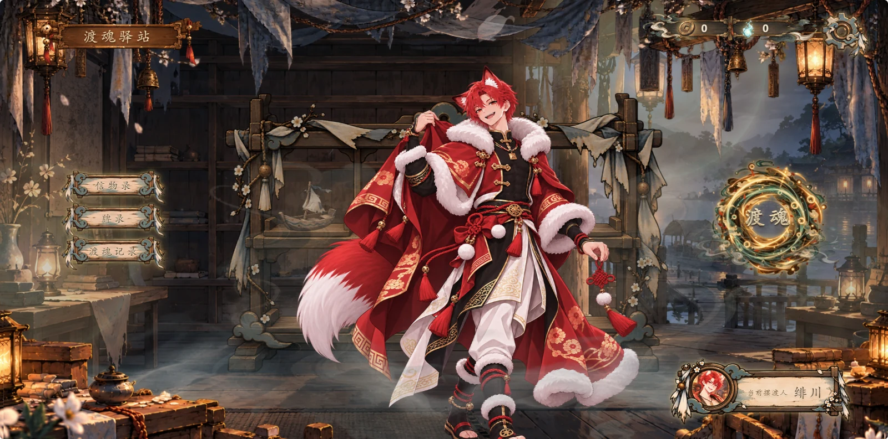
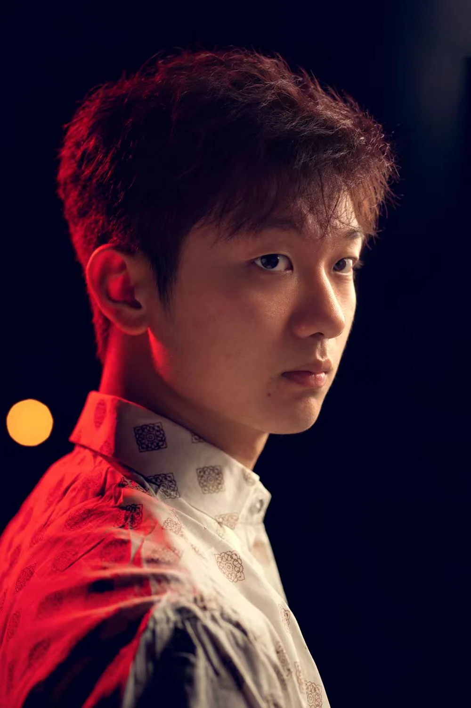
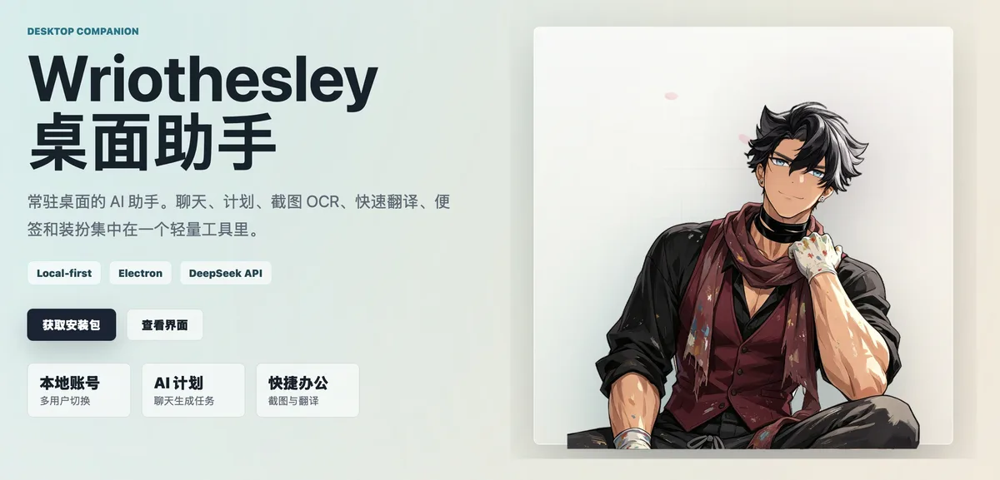
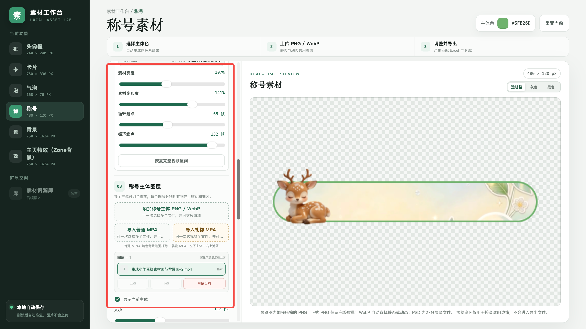

01 / INDEPENDENT GAME
渡魂 · 独立游戏
个人主导玩法、剧情、视觉与交互设计，通过持续试玩逐步优化迭代，完成可玩 Demo 及初步关卡的完整流程校验。
了解策划与制作 ↗CHEN HAOWEN / PORTFOLIO
武汉大学硕士在读，关注产品设计、数据分析与 AI 应用开发，在研究与实践中探索问题，将想法转化为可用的产品与作品。

PROFILE / 个人概览
曾在Construct、华为、美团等公司实习，实践覆盖产品设计、运营与数据分析。通过独立开发AI应用和团队效率工具，将需求转化为可用的产品。
Featured Work

01 / INDEPENDENT GAME
个人主导玩法、剧情、视觉与交互设计，通过持续试玩逐步优化迭代，完成可玩 Demo 及初步关卡的完整流程校验。
了解策划与制作 ↗
02 / AI APPLICATION
独立完成桌面应用、AI任务指令与云同步，串联对话、任务管理和截图识别。
了解技术实现 ↗
03 / PRODUCT TOOL
面向产品与运营团队独立开发，打通素材编辑与导出流程，制作效率提升2—5倍。
了解产品实践 ↗Explore